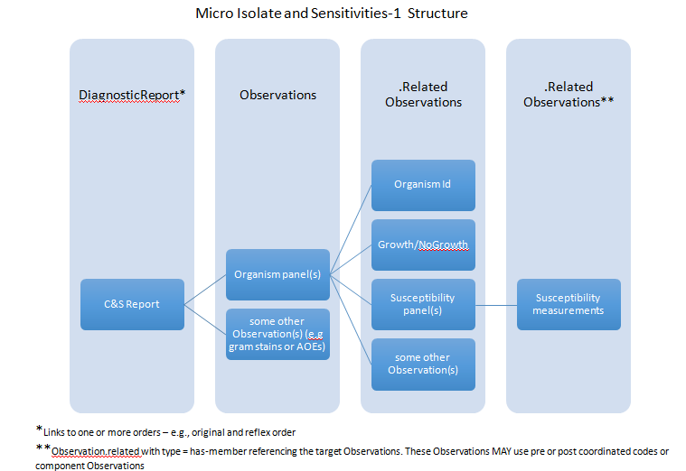
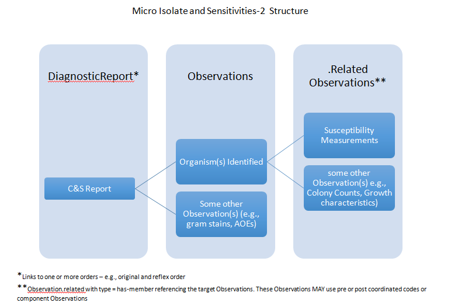

FHIR R4

 Diagnostics
DiagnosticsOrders and Observations  Work Group Work Group | Maturity Level: N/A | Standards Status: Informative | Security Category: Patient | Compartments: Device, Encounter, Patient, Practitioner |
The following examples of DiagnosticReport resources show examples of laboratory reports:
The following 2 examples of DiagnosticReport resources show example of a complex Micro Isolate and Sensitivities with both 1 and 2 levels of nested Organism and Susceptibilty panels using the related Observation Structure
Micro Isolate and Sensitivities-1: An example of a complex Micro Isolate and Sensitivities with 2 level nested Organism and Susceptibilty panels using the related Observation Structure. The following diagram is provided above to help teh reader navigate the nested structures.
Micro Isolate and Sensitivities-2: An collection Bundle showing an example of a complex Micro Isolate and Sensitivities based on the HL7 V2 Lab Reports Interface (LRI) example. This example has a single level nested Organism panels using the related Observation Structure. The following diagram is provided to help the reader navigate the nested structures.
The following examples of DiagnosticReport resources show examples of various imaging reports:
The following examples of DiagnosticReport resources show examples of genomics studies:
The following examples of DiagnosticReport resources show examples of anatomic pathology reports:
Usage note: every effort has been made to ensure that the examples are correct and useful, but they are not a normative part of the specification.
®© HL7.org 2011+. FHIR Release 4 (v4.0.0) generated on Thu, Dec 27, 2018. QA Page
Links: Search |
Version History |
Table of Contents |
Credits |
Compare to R3 |
 |
Propose a change
|
Propose a change